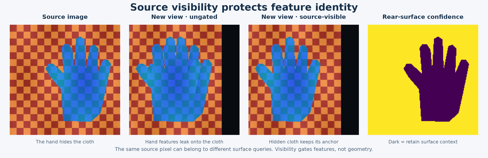
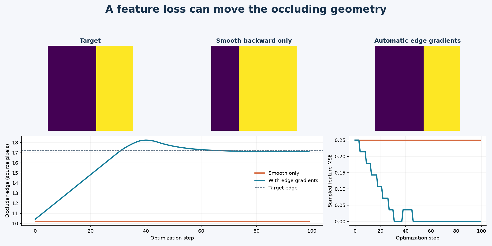

Keep source features on their surface#
A hand and a shirt can project to the same source pixel. Sampling that pixel for both surfaces paints the hand onto the shirt. The error becomes visible when a second camera exposes the previously hidden shirt.
This tutorial uses a textured background surface and an overlapping hand-shaped mesh. It compares ordinary resampling with source-visible resampling, shows the confidence signal, and optimizes an occluding edge using the sampled features.


Source visibility controls access to new image features. It keeps the hidden surface and its anchor features available for a different viewpoint.#
The complete script generates
the figures, video, and numerical checks. The illustrative refinement step
blends the samples with a known anchor texture; it is not a trained reconstruction model
or a claim to recover unknown hidden appearance.
1. Keep anchor and reprojected coordinates distinct#
An anchor feature belongs to the surface before deformation. A new source sample belongs to the current image location. They coincide only when the surface is still aligned and visible.
The pixel-grid builder already provides both coordinates:
v, uv_anchor, uv_reprojected, faces, opacity, cell_ids, face_ids = (
drtk.pixel_grid_mesh(
depth, displacement, intrinsics,
alive, join_right, join_down,
feather_width=feather_width,
return_metadata=True,
)
)
Here v is displaced camera-space geometry. Project it into the source
feature image before calling source_feature_stencil. Choose samples on
the mesh by receiver face ID and 3D barycentrics, rather than guessing
ownership from a depth tolerance. A query at a shared crack tip must name the
incident surface fan it belongs to.
2. Build one stencil, sample several feature banks#
indices, weights, source_uv, source_z = drtk.source_feature_stencil(
v_source_pixels, faces, receiver_faces, receiver_barycentrics,
feature_height, feature_width,
vertex_opacity=opacity,
return_queries=True,
)
sampled, confidence = drtk.sample_feature_stencil(
dense_features, indices, weights
)
sampled_rgb, _ = drtk.sample_feature_stencil(
source_rgb, indices, weights
)
Both images must share the stencil’s grid and batch. The feature dimension can be much larger than the final tiny shader’s input. Visibility and local receiver traversal happen once, independent of channel count.
Each bilinear tap is validated against the receiver’s local surface. Ordinary shared triangles are traversed; cuts and projected folds are not crossed. A foreground surface is still an occluder even if it is connected elsewhere to the receiving surface. Triangle order matches transparent rendering, with no per-pixel depth sort.
3. Supply confidence to the server model#
sampled is already visibility-weighted. A simple illustrative fusion is
refined = sampled + (1.0 - confidence) * anchor_features
For an entirely hidden sample, confidence and sampled features are zero, so the anchor is retained. The demo deliberately uses a known anchor to make incorrect feature transfer easy to see. In a learned system, replace this blend with a contextual MLP or transformer that receives anchor features, sampled features, confidence, and any useful geometric context.
Do not multiply sampled by confidence again or divide it by a very small
confidence. Zero feature values and missing features are different; keep the
confidence input. The source image may already contain mixed features from a
neural receptive field or transparency. Visibility is geometric confidence,
not an unmixing operator.
4. Optimize visibility with ordinary backward#
The second experiment moves an opaque edge. With only smooth interpolation gradients, the occluder’s position receives no visibility gradient. With the default edge integration, a loss on the sampled features/confidence reaches the occluder through the stencil.


The feature loss supplies the boundary signal automatically. The discrete forward visibility remains hard; the backward pass estimates its boundary motion derivative.#
indices, weights, _, _ = drtk.source_feature_stencil(
v_source_pixels, faces, receiver_faces, receiver_barycentrics, H, W
)
sampled, confidence = drtk.sample_feature_stencil(features, indices, weights)
prediction = server_model(anchor_features, sampled, confidence)
loss = downstream_loss(prediction)
loss.backward()
Visibility gradients are enabled by default. Do not apply an additional edge-gradient wrapper to the samples. The final target-view renderer has its own distinct edge-gradient path.
Hard topology remains discrete. For bernoulli_render_loss, the loss callback
must build geometry and a fresh stencil for each sampled topology, including
both members of the paired estimator. Reusing a detached stencil across samples
would silently change the objective.
5. Keep a streamable intermediate#
Source visibility and the contextual model run on the server. Attach their final compact features to the mesh, with separate atlas addresses for surfaces that share a source projection. Then serialize that mesh, the features/UVs, feather opacity, and the declared coordinate-frame/shared-model information.
The receiver only needs the final representation: project the mesh to its current camera, sample the prepared features, evaluate the tiny per-fragment MLP, and composite. It does not need the source image, visibility buffers, or the server network. No remeshing is required for this separation.
DRTK provides the training primitives; the network protocol, feature codec, and corresponding device shader belong to the surrounding project.
Reproduce the tutorial#
Install DRTK with source-feature sampling support, plus Matplotlib and FFmpeg. A CUDA device is required. Then run:
python source_features_demo.py --output ./source_features_demo
The script saves PNG figures, an H.264 video, and JSON measurements. Its source contains the complete scene and optimization setup. It does not download a model or require project-specific assets.
See drtk.source_features for the complete shape, coordinate, precision, and differentiability contracts.